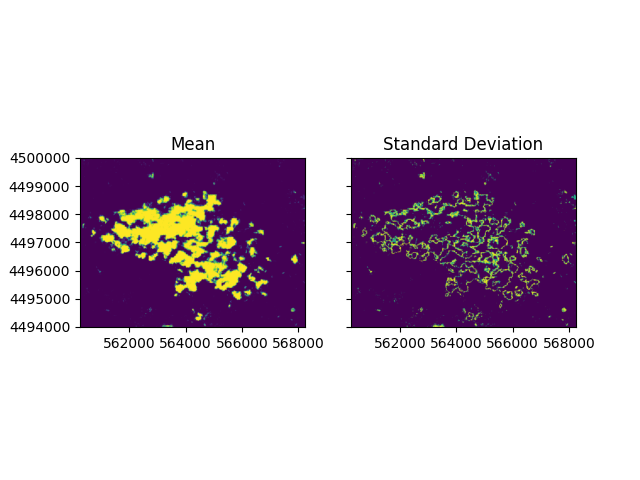

A First Model
Prepare Input
This example demonstrates the basic functionality of SpartANN. Example data is provided with the package documentation under the directory docs/example/data. The dataset includes an example image from a Sentinel-2 L1C product containing clouds (Sentinel2_clouds.tif) and a set of training points for cloud identification.
Raster Image: This image was cropped from a Sentinel-2A product (original product name:
S2A_MSIL1C_20240119T112401_N0510_R037_T29TNF_20240119T132118.SAFE). The image was processed to ensure that all 13 spectral bands have a uniform 10m resolution. Bands originally at 60m resolution were downscaled by a factor of 6, and those at 20m resolution by a factor of 2, with no interpolation of values.Calibration Points: A text file is provided with coordinates for 60 training locations. It includes 30 points identifying cloud pixels (value 1) and 30 points for non-cloud pixels (value 0). The fields in the file must be separated by a semicolon (;).
The image above shows the training area with True Colors, where calibration points are shown as blue for clouds (1) and red for other features (0).
Train the Model
We can use the tool buildmodel.py to train a model. The simplest approach is to provide the calibration points file, the raster file, and the desired filename for the model output.
In this example, we will define a specific network structure with three hidden layers, with decreasing numbers of neurons in each. The raster has 13 bands (13 input neurons), and we need to predict a probability for clouds (1 output neuron). To specify the three hidden layers with 10, 6, and 3 neurons, we pass the parameter -hl 10,6,3.
To obtain multiple predictions, we will define 10 repetitions, with 20% of the randomly selected points reserved for testing. For this, we pass the arguments -r 10 and -t 20.
If you installed SpartANN in a conda environment, ensure you activate it before running the command. Refer to the Installation section for further details.
The command to train the model is:
python tools/buildmodel.py -r 10 -t 20 -hl 10,6,3 examples/data/train_data.csv examples/data/Sentinel2_clouds.tif Clouds_model.obj
This will display training information and write the trained model to the current directory. Output should look similar to:
Training networks with scheme i:[13] | hl:[10, 6, 3] | o:[1].
Repetition: 1 from 10
| Iteration | Error | Train | Test | Product | ErrDiff |
| 4887 | 1.49998 | 0.874 | 0.351 | 0.307 | 0.00000 |
Best net:
Iteration 66
Error: 2.998
Validation train: 0.746
Validation test: 0.526
Validation product: 0.393
For this particular run, the training stopped after 4887 iterations due to negligible improvement, but the best iteration was number 66 based on performance metrics. Performance is assessed using Cohen’s Kappa, which was 0.746 for training and 0.526 for testing datasets for the best iteration.
Predicting with the Model
Once the model is trained, you can use the predict.py tool to generate predictions. This tool creates a raster with the same geographic specifications as the source raster, containing 10 bands (one for each repetition).
Specify the source raster, the model file, and the desired output raster file. SpartANN prefers TIFF files. If you have multiple CPU cores available, you can define how many you want to use with the option -c. In this example, we use 5 cored. The prediction command is:
python tools/predict.py -c 5 examples/data/Sentinel2_clouds.tif Clouds_model.obj results.tif
You can use any GIS software to inspect the resulting raster. The image below shows the predictions for the first four repetitions:
Although the different networks from the repetitions predicted the same core of clouds, substantial differences are observed in some areas, such as in the lower-right prediction map.
Ensembling
Ensembling the final product can easily be accomplished using any GIS software. The output raster includes descriptive band names, making it straightforward to identify each repetition. Users can remove poorly performing networks from the final ensemble if desired.
Since version 1.1, SpartANN provides a built-in tool for ensembling predictions. Here, we produce two ensemble rasters, one based on the mean prediction and another retrieves the standard deviation among predicitons.
python tools/ensemble.py -f mean results.tif Mean_prediction.tif
python tools/ensemble.py -f std results.tif Sdev_prediction.tif
Below, the mean prediction and corresponding standard deviation of all replicates (bands) are displayed to illustrate uncertainty in the predictions:
Using a threshold of 0.5, a cloud mask can be created. When overlaid on the True Color image, the mask highlights identified cloud pixels: